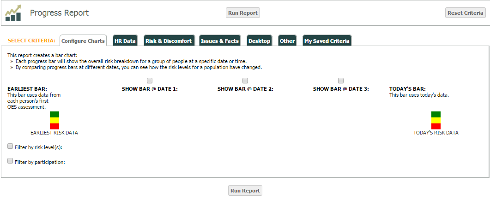
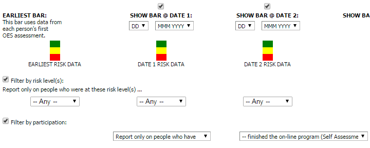
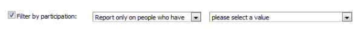
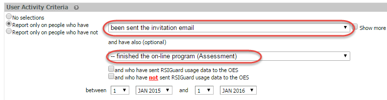
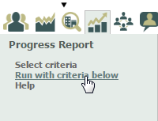
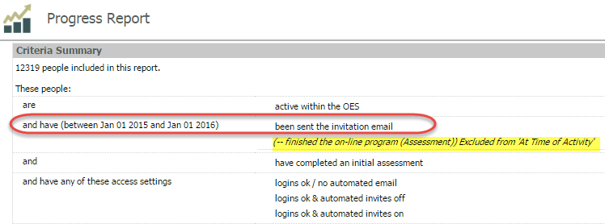
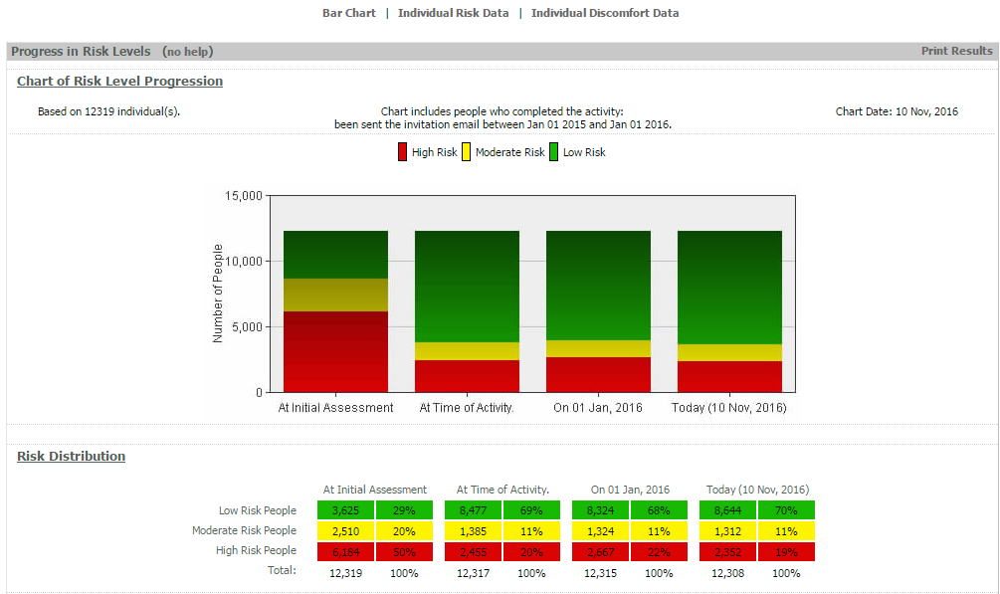
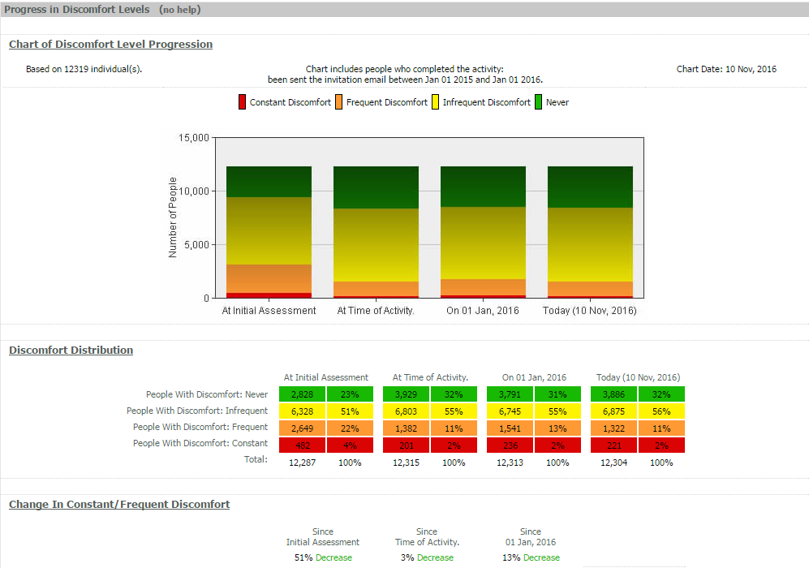

The Progress Report creates a bar chart. Each progress bar shows the OVERALL risk breakdown for a group of users at a specific date or time. By comparing progress bars at different dates, you can see how the risk levels for a population have changed over time.
Data may be filtered by attributes, participation and by risk level. Up to three dates may be chosen for comparison. Each date will create its own bar. There will also be a bar for today's date.

You may filter by risk levels to select only people with a specific risk level (low, moderate, high or moderate, high) for each date chosen.
You may select one activity to the "Filter by participation" option. For example, you can filter only for users who have completed a self-assessment.

Note that when configuring a Progress Report, only ONE "have" option is available, unlike in the Employee List Report, in which you can include two "have" options.

If you first configure an Employee List Report that includes two "have" options, and then run a Progress Report using "Run with criteria below," the second "have" will not be included in the report.
In the reporting example below, an Employee List Report was run for users who have "been sent the invitation email" and who also have "—finished the on-line program (Assessment)" between January 1, 2015 and January 1, 2016.


A Progress Report was then run using "Run with criteria below" (the same criteria used in the Employee List Report).
Since only one action can be used to report "At Time of Activity", the second option "—finished the on-line program (Assessment)" was excluded from the Progress Report. The report results only include those who have "been sent the invitation email."

Tip: After running a report, READ what's included at the top of the report. Since the combination of criteria can be complex, the result set may be different than anticipated. The description of "what's included" will help you understand it.
The report contains two charts showing Progress in Risk Levels and Progress in Discomfort Levels. The charts show levels at initial assessment (i.e., the very first time the user completed the assessment) and at the time of activity, as well as start and end dates for the report. A distribution table shows numbers below the chart.
Print Options
A Progress Report may be printed by clicking Print Results in the gray bar at the top of the first chart.
To create a digital copy, you can print to XP and save it to your computer.
Progress in (Overall) Risk Levels:

Progress in Discomfort Levels:

See the Progress Reports examples for description of some report options.